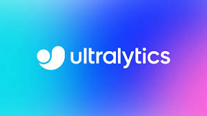
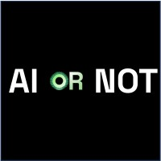
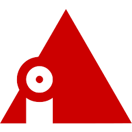

아래의 AI는 주어진 이미지나 텍스트를 다른 AI에 의해서 제작되었는지의 진위 여부를 판변합니다.
1. Undetectable AI
Undetectable AI
는 텍스트가 사람이 쓴 것인지, 인공지능이 생성한 것인지 구분하는 데 도움을 주는 AI 콘텐츠 판별 도구입니다. 특히 GPT, ChatGPT, Claude 등 생성형 AI 모델이 만든 글을 식별하고, 텍스트의 ‘인간성(human-likeness)’을 수치화하여 평가합니다.
주요 기능
AI vs 인간 텍스트 감별
입력된 문장이 사람에 의해 작성된 것인지, 생성형 AI가 작성한 것인지를 판별합니다.
확률 기반 분석
텍스트의 문장 구조, 어휘 사용, 반복 패턴 등을 기반으로 AI 생성 가능성을 점수화합니다.
다양한 언어 지원
영어 중심이지만, 다국어(일부 한글 포함) 콘텐츠도 분석 가능합니다.
간단한 사용법
웹사이트에 텍스트를 붙여넣고 버튼만 누르면 분석 결과를 바로 확인할 수 있습니다.
윤리적 사용 지원
에세이 표절, 뉴스 생성 여부, 기업 보고서 검증 등 다양한 활용이 가능합니다.
2. Ultralytics

Ultralytics
는 객체 탐지(Object Detection) 분야에서 널리 사용되는 YOLOv5, YOLOv8 등의 모델을 개발하고 제공하는 AI 프레임워크 플랫폼입니다. 실시간 이미지 인식, 얼굴 탐지, 차량 추적 등 비전 AI 기술에 최적화된 오픈소스 도구들을 제공합니다.
주요 기능
YOLO 모델 제공 (v5~v8)
빠르고 정확한 객체 탐지 모델인 YOLO 시리즈를 오픈소스로 제공하며, 커스터마이징도 가능합니다.
쉬운 설치와 실행
Python 기반의 간단한 설치(`pip install ultralytics`)로 누구나 쉽게 모델 실행 가능.
학습 및 추론 API 지원
모델 학습(train), 검증(val), 추론(predict) 기능이 간단한 명령어로 구현됩니다.
실시간 이미지/비디오 분석
웹캠, CCTV, 유튜브 영상 등 다양한 실시간 영상에서 객체 탐지가 가능합니다.
웹 인터페이스 제공 (Ultralytics HUB)
코드 없이도 웹에서 모델을 업로드하고 결과를 확인할 수 있는 GUI 툴도 지원합니다.
3. Illuminarty AI
Illuminarty AI
는 이미지, 문서, 영상 등 다양한 콘텐츠가 인공지능에 의해 생성되었는지 탐지하는 판별 AI입니다. 특히 딥페이크 이미지, 위조 문서, 생성형 텍스트를 식별해 AI 콘텐츠와 인간 콘텐츠를 구분하는 데 활용됩니다.
주요 기능
이미지 진위 여부 판별
AI 이미지 생성 도구(Midjourney, DALL·E 등)로 만든 이미지를 식별하고 ‘조작 여부’를 분석합니다.
문서/텍스트 탐지
논문, 기사, 블로그 등의 텍스트가 생성형 AI(ChatGPT 등)에 의해 작성되었는지 판단합니다.
Deepfake 탐지
얼굴 조작 영상이나 AI 음성 영상(딥페이크 등)을 분석하여 사실 여부를 판별합니다.
정밀 분석 리포트 제공
탐지 결과를 신뢰도 점수와 함께 시각적으로 제공하여 콘텐츠의 진위 여부를 직관적으로 이해할 수 있습니다.
온라인 기반 도구
별도 설치 없이 웹에서 이미지나 텍스트를 업로드해 바로 분석할 수 있습니다.
4. AI or Not

AI or Not
은 Midjourney, DALL·E, Stable Diffusion 등 다양한 AI 이미지 생성 모델로 만들어진 이미지를 탐지할 수 있는 웹 기반의 이미지 감별 도구입니다. 업로드된 이미지가 사람의 사진인지, AI가 생성한 이미지인지 여부를 인공지능이 분석하여 결과를 제공합니다.
주요 기능
AI 생성 이미지 감별
업로드된 이미지가 AI로 생성된 것인지 판단하고 신뢰도(확률)를 시각적으로 제공합니다.
확률 기반 탐지
“92% 확률로 AI 이미지입니다” 같은 형태로 판단 근거를 제공해 명확한 해석이 가능합니다.
다양한 생성 툴 대응
DALL·E, Midjourney, Stable Diffusion, Artbreeder 등 다양한 AI 생성 도구의 이미지 판별 가능.
웹에서 바로 사용 가능
이미지 파일을 끌어다 놓기만 해도 탐지가 실행되는 간단한 사용자 인터페이스 제공.
AI 훈련 데이터 기반 판별
훈련된 신경망 모델을 통해 이미지 특징을 분석하고 AI 특유의 패턴을 감지합니다.
5. Is It AI?

Is It AI?
는 사용자가 업로드한 이미지가 사람이 직접 만든 것인지, 혹은 AI에 의해 생성된 것인지를 탐지하는 무료 웹 기반 도구입니다. 생성형 AI의 확산에 따라, 온라인상의 이미지 진위 여부를 확인할 수 있는 간편한 수단으로 주목받고 있습니다.
주요 기능
이미지 생성자 판별
이미지가 사람에 의해 제작된 것인지, DALL·E, Midjourney, Stable Diffusion 등 AI에 의해 생성된 것인지를 판단합니다.
시각적 확률 결과 제공
"95% AI Generated"처럼 **확률 기반 결과**를 시각적으로 표시해줍니다.
누구나 사용 가능한 웹 플랫폼
웹에서 이미지 업로드만 하면 설치 없이 바로 결과를 확인할 수 있습니다.
훈련된 AI 모델 기반 탐지
생성형 AI 특유의 픽셀 패턴, 해상도 특성, 비현실적인 질감 등을 AI가 분석합니다.
무료 사용 가능
계정 없이도 탐지 기능을 기본적으로 이용할 수 있습니다.
*요약표*
이름
기능
Undetectable AI
AI가 생성한 텍스트를 인간이 쓴 것처럼 자연스럽게 리라이팅하여 탐지를 회피하게 해주는 도구
Ultralytics
YOLO 기반 객체 탐지 모델 제공, 이미지/영상에서 실시간 물체 식별 및 추적 가능
Illuminarty AI
AI로 생성된 이미지, 텍스트, 영상 여부를 탐지하고 진위 여부 분석 리포트를 제공
AI or Not
업로드된 이미지가 AI로 생성되었는지를 확률 기반으로 판단해주는 이미지 판별 도구
Is It AI?
사람이 만든 이미지와 AI 이미지(Midjourney, DALL·E 등)를 구별하는 탐지 AI